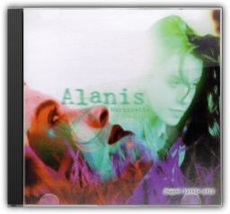
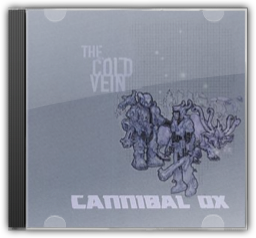
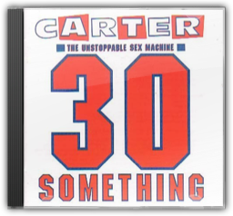
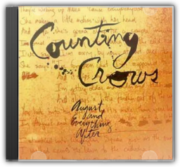
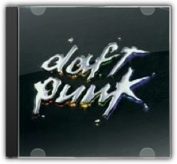

Having established their reputation as Comeback Kids with 1987's Permanent Vacation, Aerosmith proceeded to cement it with 1989's Pump. With hit singles like the expectedly raunchy "Love in an Elevator" and the unexpectedly socially relevant "Janie's Got a Gun" (which, unlike most socially relevant songs by hard rock bands, manages to avoid the cheese factor), Pumpwas proof positive that the boys were back. Everything that makes Aerosmith what they are is present here: a solid bluesy base, tight arrangements, sexy rhythms, and a heavy dose of fun. There are some nice touches too; check out the bass line on "Voodoo Medicine Man", or the blues-folk ending tacked onto "What It Takes" that, more than anything else on the album, reveals the band's roots. —Genevieve Williams

Jagged Little Pill
Alanis Morissette
You could argue that Jagged Little Pillis the commercialised face of grunge. You could argue that Morrisette is just a cynical businesswoman, courting controversy with a few carefully placed, risqué references. You could even argue that this whole angst-rock is just a comfort-blanket for the therapy-generation. But it's still hard to argue that Jagged Little Pillisn't a great album. After all, it's the perfect alternative/mainstream crossover. There's "You Oughta Know", which marries its vitriolic, explicit narrative to thunderous, airbrushed grunge. With references to oral sex, Middle America were shocked, but not quite offended: it sold by the truckload. There's "Ironic", where Morrisette laments the trials that face every housewife ("there's ten thousand spoons / when all you need is a knife") to a scream-along, mosh-friendly chorus. The simple truth is, on Jagged Little Pill, the Canadian-born Alanis Morrisette does a very good job of being America's Everywoman. —Louis Pattison 
Unfairly dismissed by much of the electronica cognoscenti—too commercial, some sniffed: too calculated—this was, nevertheless, an ambitious (and mostly satisfying) attempt to fuse the volume and density of rock with the broad textural vocabulary of electronica. The single, "Ain't Talkin''Bout Dub," effectively defined the template, marrying a corrosive Van Halen guitar sample to chattering breakbeats; the remainder of the album was divided between variations on this theme (the slide guitar propelling "Altamont Super-Highway Revisited," the bluesy shuffle of "Tears Of The Gods"), and moments of almost meditative stillness, courtesy of the group's other incarnation, the Stealth Sonic Orchestra. The most accomplished of the latter is a ballad titled "Pain In Any Language," which features the last recorded vocal of late Associates frontman Billy MacKenzie, to whose memory this bold and singular album is dedicated. —Andrew McGuire 
Strange title but perhaps one that will become increasingly familiar if It's All About The Stragglersearns what might be its deserved status as enduring pop masterpiece. Essentially UK garage with the vocal sheen of US R&B, there is also a wealth of detail and reference that defies easy categorisation. And despite the confusing statistic of nine different vocalists (including Craig David and Robbie Craig) spread over 12 tracks, there is a flow and clarity to Stragglers. Much of it comes from their minimal palette of tight garage beats and pretty keyboard sounds that twinkle like a sonic rendering of fairy-lights. Other elements are dance (both pop and underground) staples: Ibizan guitars, rave-accelerated vocals, tech-house textures and subtle digital arabesques. Every track sounds like a single (four UK Top 10 hits had already been taken from it on its release including number one "Re-Rewind") and all precariously balance a killer pop sensibility with gestures towards a sexier, urban dance floor. Unbeatable stuff—and if a touch child-like (compared to say NIN) then also more than a little sublime. —Tony Marcus 
Among the first wave of British indie bands to trade in their tunnel- vision guitars for a more expansive dance sound after the acid house revolution, The Beloved were well ahead of the pack in their new direction. Jon Marsh's inspired use of Balearic beats, house synthesisers and lush harmonics are welded together by subtle guitars Not for nothing has "The Sun Rising", all glistening keyboards, backwards guitar and dazed, ethereal vocals, achieved near-mythical status. This is the sound of a craftsman taking the simplistic acid motif and honing it, decorating it, trying to make the perfect indie-dance hybrid and succeeding nearly every time. The daisy age lyrical gloss is never too syrupy; the hippy sentiments are more loved-up than cracked up and make this feel-good album feel even better. All that and they even manage to rhyme "Jean-Paul Sartre" with "Jeffrey Archer". —Ben Clancy |

The greatest expression of Burt Bacharach's composing and arranging talents is the marvellous string of productions he made with Dionne Warwick and lyricist Hal David for a decade or so starting in 1962. Many of their triumphs are included in this three CD box, along with dozens of other tracks made between 1957 (Marty Robbins's "Story of My Life") and 1996 (Bacharach's collaboration with Elvis Costello on "God Give Me Strength"). The master's blend of froth, deep emotion and challenging musicality provides many masterpieces and a few unfortunate moments: he doesn't have much to show for the 1980s aside from "That's What Friends Are For" and "Arthur's Theme". Its handful of missteps aside, though, The Look of Loveis an essential trove of great pop things. —Rickey Wright

The Cold Vein
Cannibal Ox
Cannibal Ox's Vast Aire Kramer and Vordul Megala Shamar have struck a cold vein in hip-hop and come up with digital gold. Digging for dignity in an iron galaxy, to raise human tragedy beyond the small black print of the crime pages, these rap Vikings write rhymes in the blood of the slain, spit-sacred thought in the service of salvation. With production by Company Flow's El-P (who also appears on the group's ghetto-vaudeville theme tune "Ox out the Cage" and the industry-sniping "Ridiculoid"), the backdrop to their rap reality-myth is a drone-heavy matrix of gritty, atomised funk and reconstructed beats. Alaska and Cryptic of Atoms Family (the larger group to whom Can Ox pledge allegiance) guest on "Atom", colliding with their compadres like charged molecules. While on "A B-Boy's Alpha" Vast and Vordul present a rugged primer to the strife life. Powered by a paralysing banshee-wail, "Raspberry Fields" douses the Beatles with brown acid and dumps them on the baddest corner on the block for a battle to the death with the flesh-eating MCs. Closer "Pigeon" unlocks the rock box, pitching bowed electric guitar with redemptive organ chords, while Vast takes flight with words that lick the air with violence and Vordul spreads melanin wings to shield his fellow warriors from horror. No bad blood here, just cold veins locked in pitched battle to rend the world from the grip of iron, and release its populous like ions. —Chris Campion

30 Something
Carter USM
South London duo Carter USM combined an every-man appeal and a political idealism reminiscent of The Clash with a seamless cohesion of synthesised percussion, roaring post-punk riffs and razor-sharp, pun-drenched lyrics and 30 Somethingis their ultimate statement. As vocalist Jim Bob's fiery social conscience gets to grips with such burning issues as racial prejudice in the armed forces ("Bloodsport For All") and spousal abuse ("Sealed With A Glasgow Kiss"), Fruitbat's digitised wall-of-sound and heroic guitar assaults mercilessly steamroller the listener into submission. But the quality that most endeared Carter to their enormous UK fan-base was their uncanny ability to reflect the punch-drunk melancholia of the urban underdog. The bittersweet wallowing of "A Prince In A Pauper's Grave", the sorrowful regret of "Falling On A Bruise" and the ultimate dejection of "The Final Comedown" are quite simply towering, evocative genius. Way beyond essential, 30 Somethingis a 24-carat masterpiece. —Ian Fortnam 
To follow up their bombastic 1995 album Exit Planet Dust, the Chemical Brothers fine-tuned their bombastic beats and produced a rock-solid pop album (pun intended). Dig Your Own Holefinds the common ground between rock & roll and techno, both in spirit and substance. Singles like "Block Rockin' Beats,""Elektrobank," and "Setting Sun" (featuring vocals by Oasis's Noel Gallagher) may lack the big hair and pomposity of rock music, but they make up for it in spades, with sampled and real guitars battling for space with sirens and distorted hip-hop drums. The album reeks of pure enthusiasm and energy, evoking a crowd-pleasing exuberance that makes Dig Your Own Holea Back in Blackfor the late 1990s. Pure stadium techno. —Matthew Corwine

August and Everything After
Counting Crows
It's amazing the difference a year makes. Upon its release, August and Everything Aftersounded remarkably fresh, a welcome change from the crunch and screech of grunge. Blending the vocal athleticism of Van Morrison with the moody rock of The Band, the Counting Crows turned on a whole legion of fans turned off by modern rock. But what sounded fresh soon became stale as dozens of bands flocked to the radio with euthanised versions of the Counting Crows' sound. But you shouldn't hold that against the Crow boys. August and Everything Afteris a fantastic rock album. Though "Mr. Jones" was the money-maker, the disc features such stand-out cuts as the dark lilt of "Anna Begins", the morose "Rain King", and the outstanding U2-meets-Grant Lee Buffalo anthem "Murder of One". Maybe time, and another listen, will heal the damage wrought. —Tod Nelson

Discovery
Daft Punk
The French twosome behind Daft Punk, Thomas Bangalter and Guy-Manuel De Homem-Christo, get away with an awful lot. They go around impersonating aliens and robots in their interviews, they put records out only once every three years, and they make music that evokes a million other artists—while not really sounding like any of them. The keyboard noodlings of Jean-Michel Jarre are in there somewhere, along with the otherworldly imagery and giant hooks of '70s rock icons like Boston or even Electric Light Orchestra. There are dashes of 1999-era Prince and oodles of new wave and disco cheese, from Harold Faltermeyer and Gary Numan to the Bee Gees, all set off with efficient house beats. So how have they managed to position themselves as electronic music's next great crossover artists? On Discovery, the follow-up to the 1998 worldwide smash Homework, the answer is obvious: they have no shame, and they know how to make us dance. |

Liam Clancy
Collection Total:
1504 Items
1504 Items
Last Updated:
Jan 14, 2011
Jan 14, 2011


 Made with Delicious Library
Made with Delicious Library